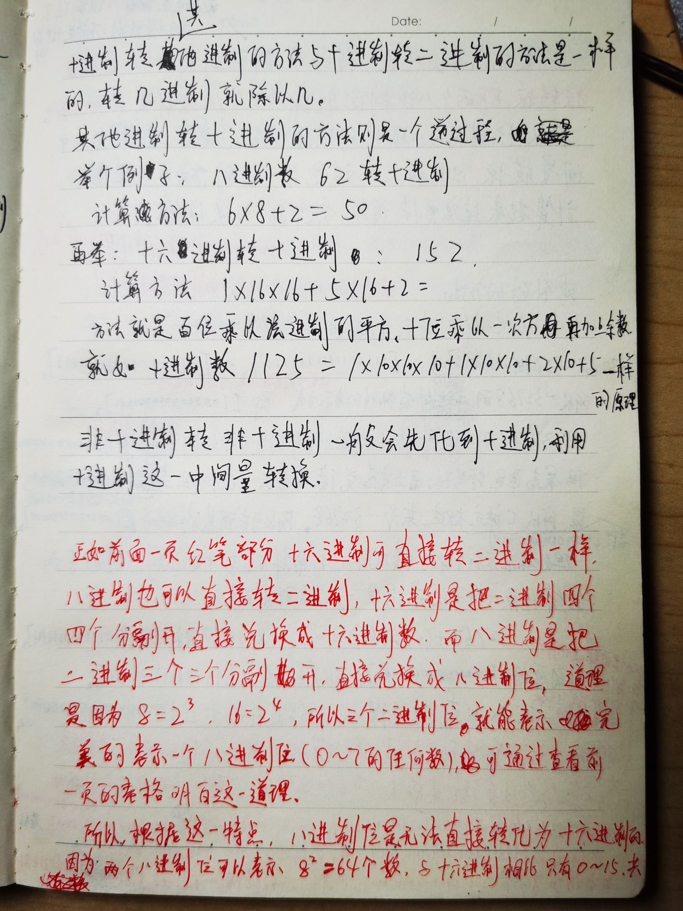
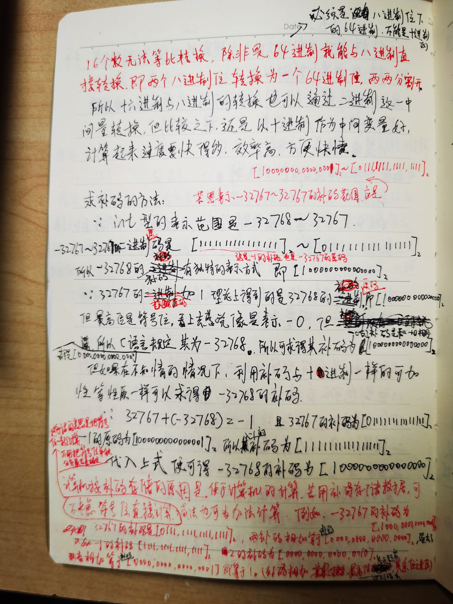

注: 在二进制中取反后＋1实际上是取反后 + 0000 0001 (拿8位二进制位来说),但因为1这个数字的特殊性 ,
在任何进制中都表示一个数, 所以在任何进制中 +1其实都一样,所以不用刻意把他转换为二进制来写,因为他在任何进制里都是一个基数
当然0也一样,在任何进制中都可以＋0 ,但＋ 0 没有任何意义
但比如＋9在不同的进制就不一样了, 二进制和八进制是加不了的,因为已经进了位了
只有0和1在任何进制是都是不用转换的,直接相加的
1、在原码取反后的加1操作中 符号位是参与进位运算的 所以在8位二进制中 有-0的原码[1000 0000] 取反后为反码[1111 1111]，加1后 因为符号位参与运算 所以结果为[1 0000 0000] 但这是八位二进制 所以最前面的1溢出 求得补码为[0000 0000]。这个溢出现象也只会在+0和-0身上发生。因为只有他们的反码会是[1111 1111],让符号位有进位的可能。这也是为什么0有两个原码,但只有一个补码----运算规则使然。
2、二进制中 8位 原码反码的取值范围是-127~127。补码的取值范围是-128~127。都知道原码[1000 0000]表示的是-0 ，[0000 0000]表示的是+0 ,所以0有两个原码,但只有一个补码。取值范围比补码少了一个。而补码[1000 0000]表示的是-128，-128没有原码 因为补码[1000 0000]除符号位取反后 +1 得到的原码是[0000 0000]，它是0的原码。(原因在第5点进行解释)
3、
正数的原码反码补码都是其本身。
负数的反码是: 原码除符号位取反(也可以说是负数的绝对值的原码所有位取求反的,)
负数的补码是: 原码除符号位取反后＋1
4、
负数的原码转补码和补码转原码都可以用: 除符号位取反后+1
同理, 正数补码转其对应的负数补码只需所有位取反后＋1。所以与之对应的,负数补码转其对应的正数补码只需先-1再所有位取反(实际上计算机 并没有减法,,只有人为的补码转换时才可以这样做)
但实际上,负数补码转其对应的正数的补码也可以所有位取反后＋1。
所以又得出结论,
正数补码转其对应的负数补码和负数补码转其对应的正数的补码都只需所有位取反后＋1
5、在计算机中, 0的原码有两个,而补码只有一个。
例如,在8位二进制位中,0的原码有两个: 0000 0000 和 1000 0000 。但是其补码只有一个 0000 0000
所以按照这种情况, 8位二进制位原码能表示的数的范围是-127~127
而实际上,在计算机中(因为计算机是按补码储存的),8位二进制位能表示的数的范围是-128~127 ,
而-128的补码正好是1000 0000(是0的其中一个原码)
因为在计算机的计算时 ,从来不会把一个数转换成原码再运算, 只会直接按照补码直接运算。只有在人需要看这个数的二进制形式时
(比如想知道一个十进制数转换为二进制是多少)才会将这个数转化为原码,这个时候默认显示给人看的形式就是直接的从别的进制换算
过来的二进制形式,也就是原码,但实际运算时还是按照补码进行运算。因为不管是几进制,实际在计算机中都是按照二进制并且是补码进行
储存的,只是显示给人看的形式不一样而已,所以运算也是直接用补码进行运算,不可能每次运算还要转换成原码 ,那样太麻烦了
从下面运算中,我们也可以知道为什么-128的补码是1000 0000
-128 = -127-1 = -127 + (-1) (因为补码没有减法运算,减1就是加(-1),见后面第6、7两点)
因为-127的原码是1111 1111 所以其补码为 1000 0001
-1的原码是 1000 0001 所以其补码为 1111 1111
故 -128 = 1000 0001 + 1111 1111 = 1 1000 0000 溢出,舍去最高位,可知-128的补码是1000 0000 (舍去的原则见第7点)
6、在计算机里补码只有加法没有减法。当然人是可以类比十进制的减法运算法则人为的进行减法运算,
比如用8位二进制位来说, 如0000 1000 - 1 我们都一眼就知道结果会是 0000 0111 ,是从十进制减法里面得出来的规律
但是实际上计算机里是没有减法的 0000 1000 - 1 实际上是这样运算的 : 0000 1000 + (-1) = 0000 1000 + 1111 1111 = 1 0000 0111
由于是8位二进制位, 这里出现了9位,最高位直接溢出,舍弃。所以结果为 0000 1000。
补码的减法运算
减法实际上就是加一个负数。运算法则和加法实际上是一致的！
7、补码的加法运算: (注意符号位也是要参与运算的)
两个机器数相加的补码可以先通过分别对两个机器数求补码，然后再相加得到，在采用补码形式表示时，进行加法运算可以把符号位和数值位一起进行运算(若符号位有进位，导致了益出，则直接舍弃)，结果为两数之和的补码形式。
示例1：求两个十进制数的和 35+18。
首先，规定字长是8位，也就是只能用8位二进制表示。
35的原码：00100011。
18的原码：00010010。
因为35和18都是正数，所以补码和原码完全一致。
35的补码：00100011。
18的补码：00010010。
因为补码是可以连同符号位一起运算，所以运算法则等同于无符号二进制运算：
00100011---35二进制表示
00010010---18二进制表示
00110101-----转换成10进制是53。结果正确！
示例2：求两个十进制数的和 35+(-18)。
同示例1一样，只能用8位表示。
35的原码： 00100011。
-18的原码：10010010。
因为35是正数，补码与原码完全一致，但是-18是负数，补码需要转换。
35的补码：00100011。
-18的补码：由原码除符号位外取反，再在最低位+1，得到结果是11101110。这时都是补码，运算规则等同于无符号二进制加法。
00100011
11101110
100010001---因为前面规定了字长是8位，这里出现了9位，溢出了
所以最高位舍弃，舍弃后，结果为00010001，
转换成十进制是：17。结果正确！(超出字长部分直接舍弃)
并且很重要的一点是, 两个补码相比, 补码大的数 其对应的十进制也大, 并且补码数值上相邻的数(符号位看成是数值带的正负号,
而不是数值的最高位)在十进制上也是相邻的,也就是说补码和十进制(其他进制也一样)是同步递增的,并且递增的步长都是1
即 两个相差1的补码在十进制上也是相邻的两个数(相差1),并且十进制上大1的数其对应的补码同样可由小1的数其对应的补码+1得到
所以不要觉得补码和原码在十进制的对应法则上就有什么不一样
当然两个补码哪个大比较是要 :
(1)先把符号位只当做一个正负号来看。
一正一负当然没什么比的,正的大。当同为正号或同为负号时 :
(2)再把符号位舍去后,比剩余位两个二进制数谁大谁小。
同为正号时,当然是剩余二进制位更大的大
同为负号时,当然是剩余二进制位更大的小,
规则和十进制是类似的
8、我的某本笔记本上关于补码的记载:

